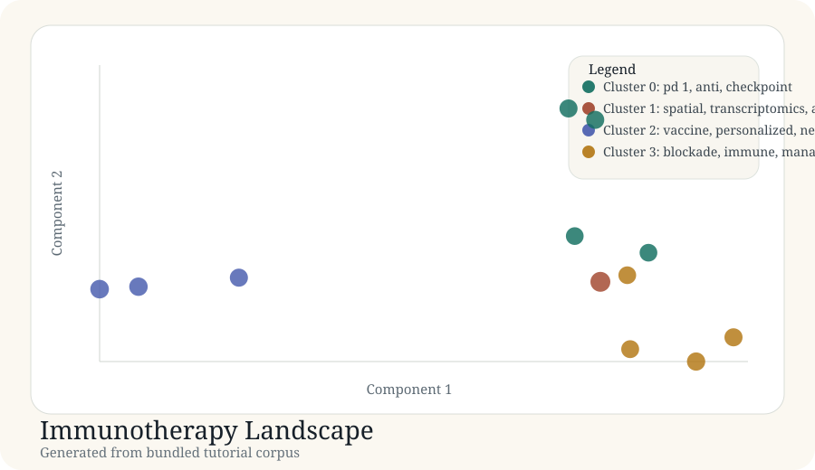

Tutorial article
Immunotherapy Landscape
This article documents a real generated tutorial run from the bundled corpus in docs/tutorial-data/immunotherapy-landscape.csv.
Background
Immunotherapy corpora often contain at least three overlapping themes: response biomarkers, spatial or single-cell profiling, and therapeutic design such as vaccine work. A useful tutorial should show whether a mapping workflow separates those themes in a way that is inspectable.
Purpose
The goal here is to turn a small but structured immunotherapy corpus into a map with paper-level labels, cluster-level summaries, two-dimensional coordinates, and an HTML report suitable for exploration.
Data used
Source file: immunotherapy-landscape.csv. The bundled corpus contains 12 records with titles, abstracts, and publication years.
| Record | Title | Year |
|---|---|---|
| immuno-001 | Immune checkpoint biomarkers in solid tumors | 2023 |
| immuno-004 | Spatial transcriptomics for tumor microenvironment profiling | 2024 |
| immuno-007 | Neoantigen selection strategies for vaccine design | 2021 |
| immuno-010 | Case report of rare toxicity under combined blockade | 2020 |
Code used
The tutorial artifacts are generated by scripts/build_case_studies.py.
The analysis is intentionally lightweight and deterministic so it can run
in constrained environments.
records = load_records(DATA_DIR / "immunotherapy-landscape.csv") vocab, vectors, _ = build_tfidf(records) centered, _ = center_vectors(vectors) coords = project(centered, top_components(centered, 2)) labels, centroids = kmeans(vectors, 4) probs = membership_probabilities(vectors, labels, centroids)
This is not yet the final production backend, but it is a real executed analysis path and not a hand-written mock.
Result figure

Results
| Cluster | Theme | Size | Mean probability |
|---|---|---|---|
| 0 | pd 1, anti, checkpoint | 4 | 0.78 |
| 1 | spatial, transcriptomics, architecture | 1 | 1.00 |
| 2 | vaccine, personalized, neoantigen | 3 | 0.83 |
| 3 | blockade, immune, management | 4 | 0.79 |
Generated artifacts
Interpretation
Even in this small corpus, the map cleanly separates vaccine-oriented papers from checkpoint-biomarker and adverse-event-management papers. The spatial profiling record stands alone, which is consistent with the fact that it is methodologically distinct from the rest of the set.
The main limitation is that this tutorial backend is lexical and small. In the full package, the same article structure should be fed by the intended literature embedding pipeline rather than by a lightweight TF-IDF tutorial analysis.